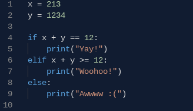

Algorithms
Essentially, everything in the universe relies on Algorithms to work. Algorithms are a set of instructions that are used to accomplish a goal. They are especially important in programming because computers need algorithms to generate an output. If, Elif, and Else statements are essential to programming because they tell a computer what to do in different situations. Maybe you want to sort a bag of multi-colored marbles into baskets of the same color. You could tell the computer: "If the marble is red, put it into the red basket. Otherwise, if it is blue, put it in the blue basket. Otherwise, throw the marble into the garbage."
If, Elif, Else
Let's take a look at this program.
- It defines variables x and y that are equal to 213 and 1234 respectively.
- The first statement checks if x + y is equal to 12. If x + y is in fact equal to 12, the program would print "Yay!".
- If x + y does not equal 12, the program moves to the elif statement. If x + y >= 12, it would print "Woohoo!".
- In this case, x + y is greater than or equal to 12, meaning that the program would print "Woohoo!" and stop. However, if x + y was smaller than 12, the program would move on to the else statement.
- On the else statement, the program would print "Awwww :(".
So what can we learn about if, elif, and else?
- If the boolean expression after the if statement evaluates to True, the code indented after the if statement is executed and the computer exits the conditional block.
- If the boolean expression after the if statement evaluates to Fales, the computer moves on to the elif statement to check if its boolean expression evaluates to True.
- If all else evaluates to False, the computer will execute the code indented after the else statement.
- Note: You are not forced to have if, elif, and else in a conditional block, only the if statement is needed.